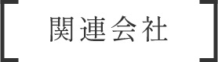

- 会社名
- 株式会社 日美
- 所在地
- 〒730-0842
広島県広島市中区舟入中町7番1号
- TEL
- 082-532-2200（代表）
- FAX
- 082-232-7733
- メールアドレス
- andinfo@nichibi.co.jp
- 創業
- 昭和21年10月
- 代表者
- 代表取締役社長 小法師 好昭
取締役 瀬尾 暢宏
取締役 高原 佳子
- 社員数
- 16名
- 昭和21年10月
- 呉市にて村上グラフィックデザイン社を創業。
- 昭和36年06月
- 事業拡張のため広島市中区八丁堀に進出。
- 昭和40年11月
- 法人組織に変更。有限会社日美を設立。
- 昭和60年11月
- 人員増加にともない中区小町に事務所移転。
- 昭和62年03月
- 業務拡張のため、株式会社日美に改め会長に村上五郎・社長に小法師好昭・専務として西本いさむの組織化に着手。
- 平成02年09月
- マッキントッシュ２台・カラープリンター・スキャナーなど一式、デザイン会社として広島初の導入によりデジタル化にシフトする。
- 平成04年11月
- 広島県内の印刷業界のデジタル化を促進するため、マッキントッシュの入・出力、機器の販売、オペレーティング講習などの業務を中心とした、サービスビューロとして、有限会社ニューロードを100％出資で設立。
- 平成07年10月
- 他社より先駆けて、ホームページ・デジタルファイルなどのIT関連事業構築に向けて始動する。
- 平成08年06月
- 株式会社デジタル工房を、（財）電気通信共済会中国支部と共同出資で設立。
- 平成08年08月
- アイム株式会社（島根県）の設立に伴い、参画依頼があり100万円の出資する。
- 平成09年02月
- 株式会社デジタルネット中国を産興株式会社と共同出資で設立。
- 平成10年12月
- 原爆ドームの世界遺産登録を記念し、産興株式会社と共同出資でミニチュア・ プラモデルを企画製作し、広島平和文化センターに納入、平和公園内だけで平和教育と世界平和を目的とし販売を開始する。
- 平成12年07月
- 新しい広告システムとして、低料金・広域エリア対象のインショップメディア事業、フリーポストカード広告をスタート。
- 平成12年08月
- 新しい雇用体系作りの創出を考え、フィクスコミュニケーションズ株式会社の本社を福岡市中央区に資本金2,300万円（87％出資）で設立。
- 平成13年11月
- ポストカード事業の安定を図るため、関東、東海、関西、中国、四国、九州と連携し、統一ネーム「BOOM」として巨大ネットワークを確立。
- 平成14年04月
- 創業55周年を迎え、当時の全日空ホテルにて全社員による社長選挙を行う。
- 平成14年06月
- 投票の結果をふまえ二代表制で小法師会長、井上社長の新体制に移行。
- 平成19年02月
- 新ロゴマーク『＆』採用。お客さまも協力会社もスタッフも『＆』の関係に。
- 平成21年12月
- 環境事業部を新設し、Co2削減と照明電気代の削減提案のためLED照明器具の販売代理店となる。
- 平成24年05月
- 社内効率の一環として、営業・企画部門、空港事業部の独立を目的とし、アンディワークス株式会社を南区段原に資本金900万円（78％出資）で設立。社内組織の見直しを図り、取締役会にて、代表取締役社長に小法師好昭・取締役統括部長として瀬尾暢宏を選任し新体制となる。
- 平成24年11月
- 広島県の活性化として、ヒューマンウォッチ『普通の人のすごい事』というフリーペーパー誌の発行を始める。
- 平成25年10月
- ARシステム『COCOAR2』を導入、営業ツールの一つとして展開していく。
- 平成26年03月
- 地域密着型のウェブサイト『かかし良品市場』を立ち上げ、地域の活性化と新たなコミュニティを創出していく。
- 平成27年04月
- 業務拡張と経費節減のため、中区舟入中町に事務所を移転する。
- 平成28年10月
- 広島商工会議所より、『創業・開設永年継続表彰』の70周年の継続表彰状を賜り厳島の『みやじま杜の宿』で、ささやかに社員全員で祝賀会を開催する。
- 平成29年05月
- 創業70周年記念として、冊子『NICHIBINO』を発行し配付する。
- 平成29年12月
- ‟FREE PAPER OF THE YEAR 2017”実行委員会から、『立花図書館賞』を受賞し、翌年『ソトコト』1月号に掲載される。
- 令和02年12月
- 新型コロナウイルス感染拡大の折、『社内の改善計画』に向けて個人面談を開始。
- 令和03年01月
- 75周年を迎えるにあたって、100周年を目指して『改善計画』のスタートとホームページの刷新に取り掛かる。
- 株式会社アドプレックス
- 株式会社日本ドリコム
- 学校法人鶴学園
- 広島工業大学
- 西川デザインテクノ株式会社
- キョーリツ株式会社
- 県立広島病院
- 株式会社ユニバーサルポスト
- 株式会社インパルスコーポレーション
- 飯南町観光協会
- 堤田貴金属工業株式会社
- 安佐動物公園
- チューリップ株式会社
- 広島市
- （順不同）

- 株式会社ニューロード
- アンディワークス株式会社
- フィクスコミュニケーションズ株式会社
- 株式会社アイム